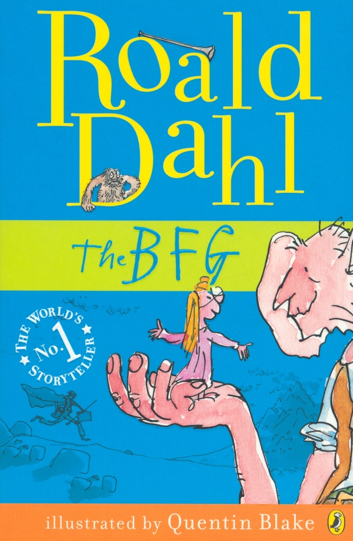

Welcome to the Giant Country
Synopsis
Written in 1982, The BFG follows ten-year-old Sophie who is in for the adventure of a lifetime when she meets the BFG (Big Friendly Giant). Naturally scared at first, the young girl soon realizes that the 24-foot behemoth is actually quite gentle and charming. As their friendship grows, Sophie's presence attracts the unwanted attention of Bloodbottler, Fleshlumpeater and other giants. After traveling to London, Sophie and the BFG must convince Queen Victoria to help them get rid of all the bad giants once and for all.
Trailer
The BFG is a 2016 American fantasy adventure film directed and co-produced by Steven Spielberg, written by Melissa Mathison and based on the 1982 novel of the same name by Roald Dahl. The film stars Mark Rylance, Ruby Barnhill, Penelope Wilton, Jemaine Clement, Rebecca Hall, Rafe Spall and Bill Hader. In the film, an orphan human girl befriends a benevolent giant, dubbed the "Big Friendly Giant", who takes her to Giant Country, where they attempt to stop the man-eating giants that are invading the human world.